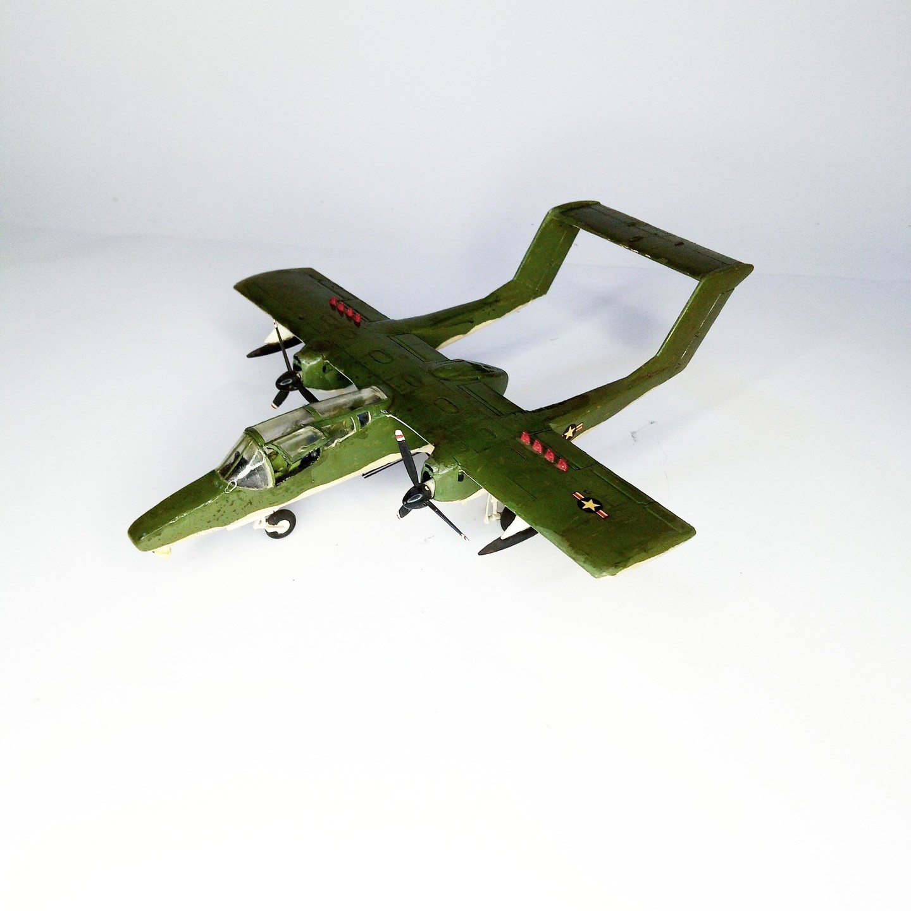
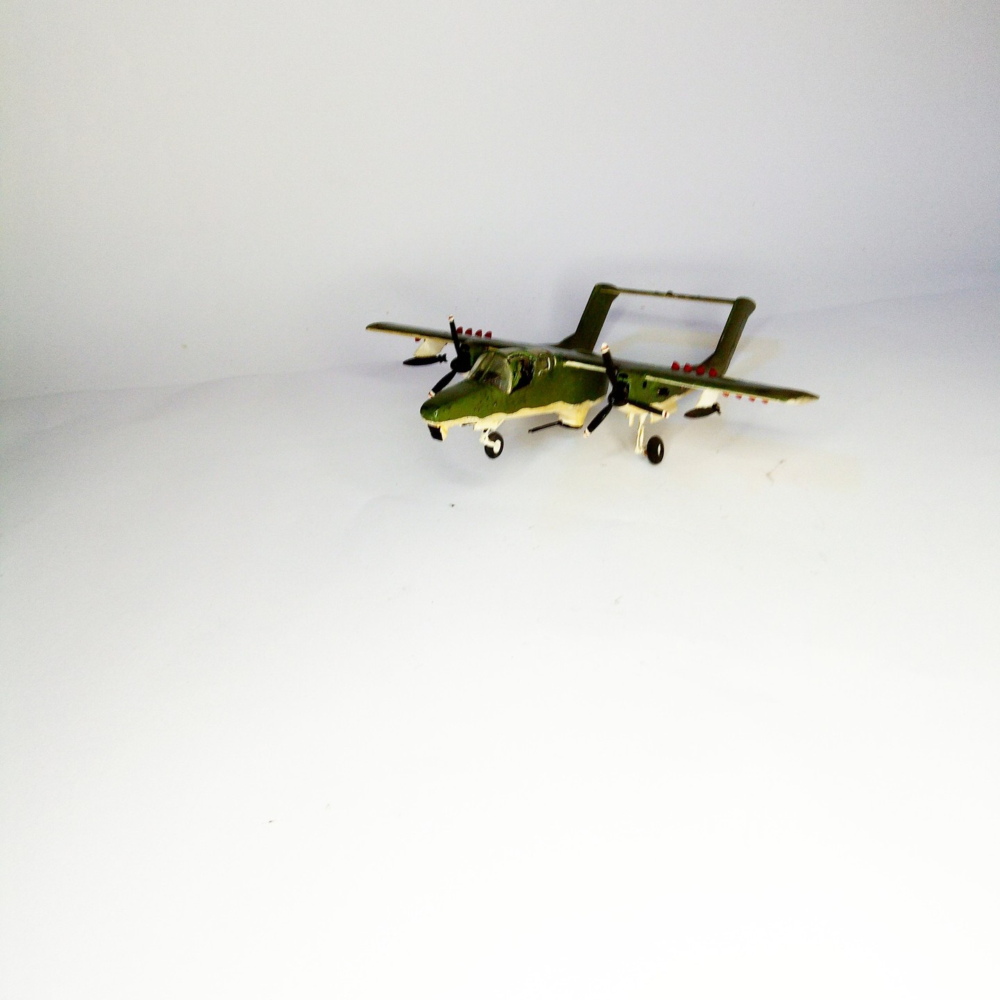

Aerei · scale model archive
North American OV-10A Bronco
North American OV-10A Bronco — Kit: conversion Airfix, Scale: 1/72. Advanced version with longer nose , FLIR and gun turret #1/72 #Airfix

Photo gallery

English description
Advanced version with longer nose , FLIR and gun turret
#1/72 #Airfix
Descrizione italiana
Avanzato versione con longer nose , FLIR e gun turret.